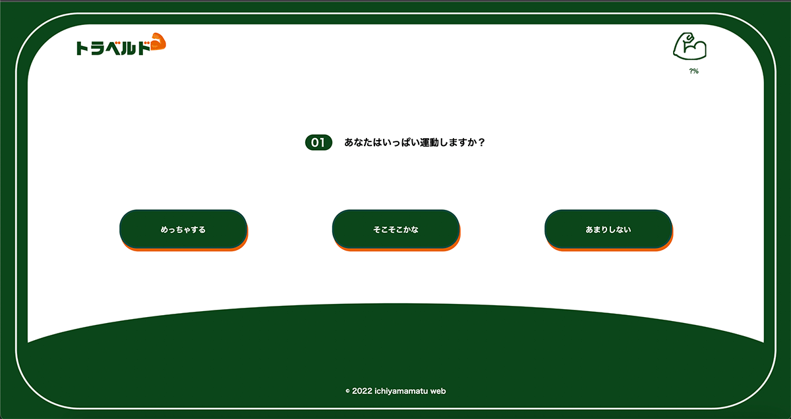
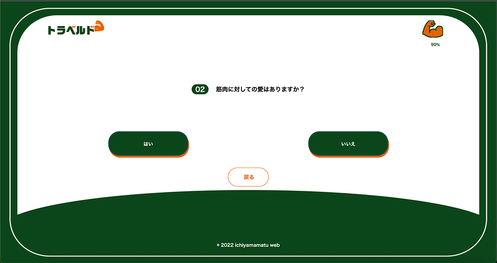
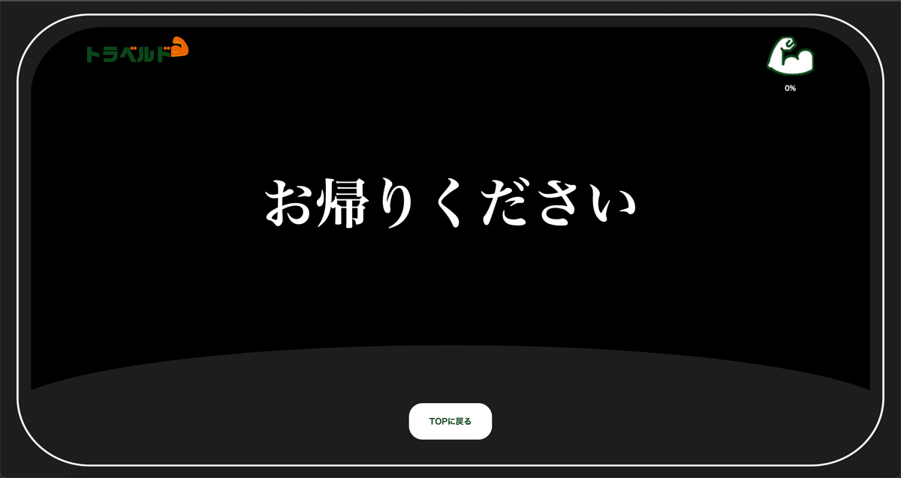
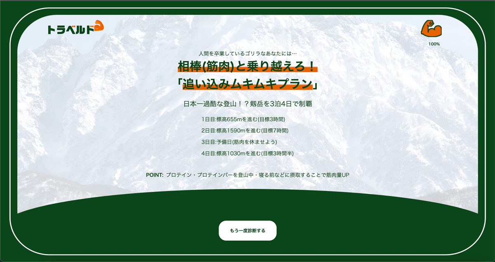
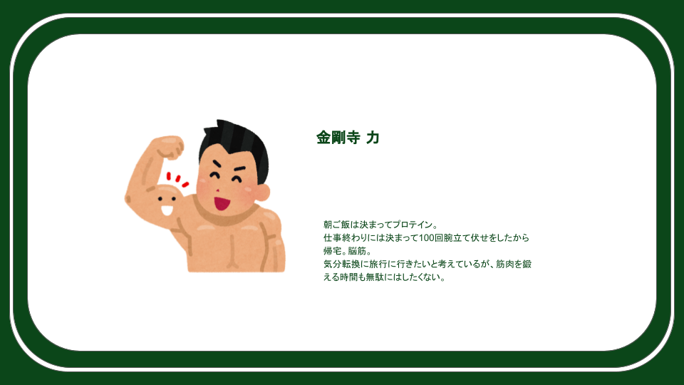
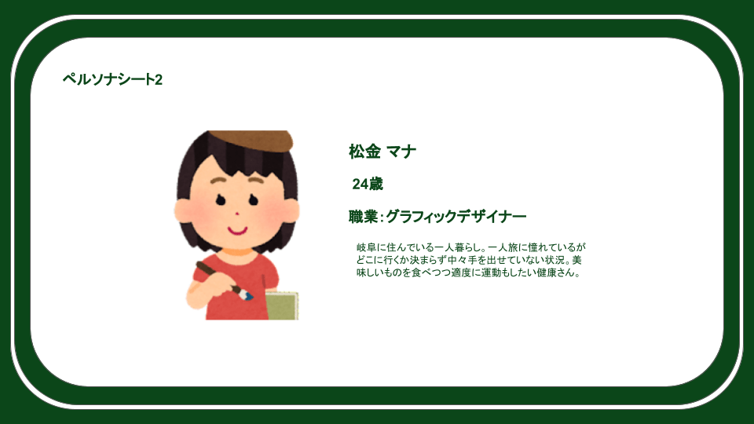
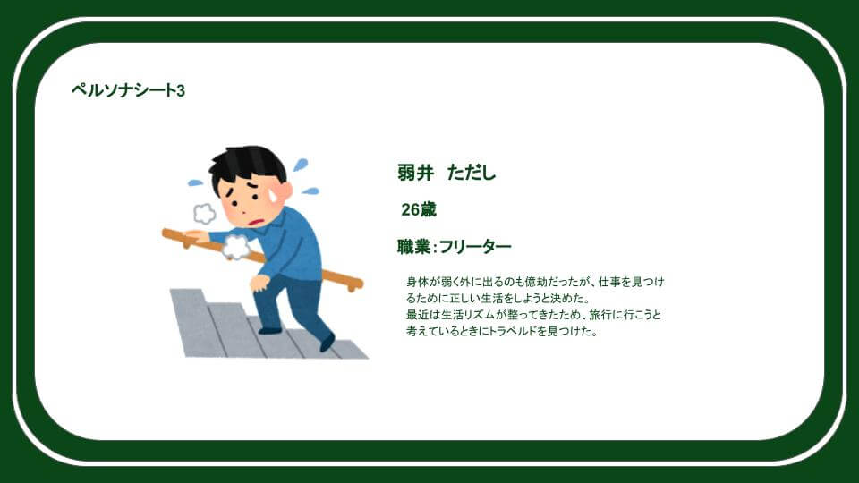
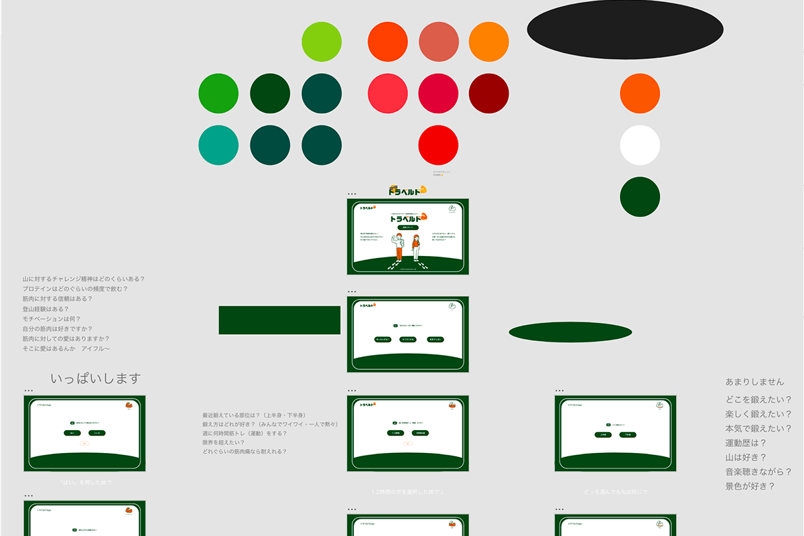
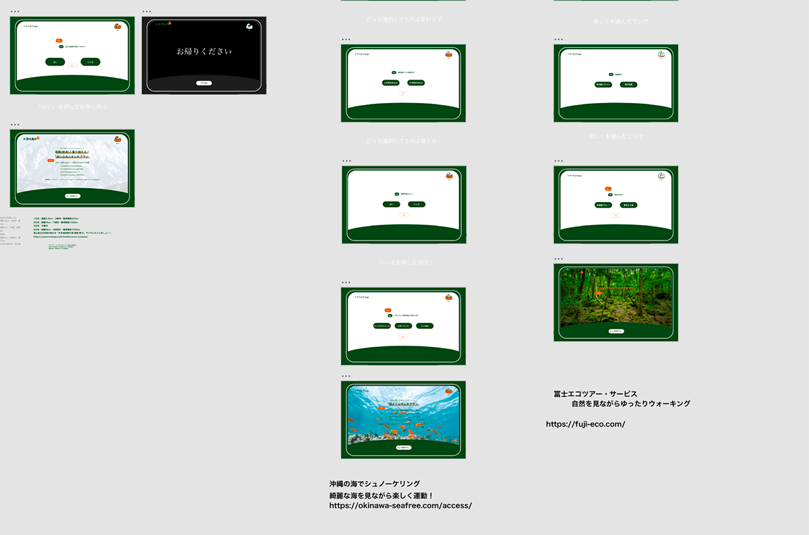

制作意図
2022/3/14~16の3日間に行われた、合同制作合宿で制作した作品です。 トライデントコンピュータ専門学校を含めた５校が参加しました。 1グループ3~4人に分かれてそれぞれ「場所」というテーマで作品作りをしていきました。
今回のテーマが場所ということで、自分に合った筋肉をつけたいという人たち向けの旅行プランを質問の答えに応じて提示するサービスを制作しました。右上の筋肉ゲージで、自分のプランの過酷度がわかりやすくなっています。
今回のグループは3人と唯一の少人数グループでした。3日間でどんなものができるのか不安でしたが、3人ならではのコミュニケーションを取ることができて、楽しく作業をすることができました。
今回私が担当したのは、主にコーディングの部分です。
使用方法
1.最初に自分の運動量を答える。
まずは、運動量の質問を最初に答えます。今回は、３人のペルソナに向けたそれぞれのプランを掲示します。今回は、一番左の「めっちゃする」と仮定します。
2.答えた運動量に応じた質問に答える。
それぞれの運動量に応じて別の質問が3~4問出てきます。
自分の筋肉に自信がなかったら、プランを提示されず「お帰りください」という画面に行きます。その画面に行ったら最初から質問をやり直さなければなりません。
3.旅行プランが提示される。
質問に答えていくと、旅行プランが提示されます。詳しい日程と楽しく効率的に乗り切れるワンポイントアドバイスも提示してくれます。
制作手順
アイデア出し
まずは、場所についてどのようなイメージがあるかを話し合いました。「パーソナルスペース」や「旅行」などの場所に関する単語をできるだけたくさん出し合いました。
その会話の中で出身地の話になり、そこから「旅行」についてのサービスにしようというふうになりました。
miroというサービスを使用し、ブレインストーミングで意見を出し合いました。
「旅行」に決まったものの、旅行プランを提示してくれるサービスはすでにある事がわかりました。
そこで、「荷物をもたない旅行」や「スマホを持たない旅行」など「〇〇しない（する）旅行」を提示してくれるサービスにしようとなりました。
新型コロナウイルスの影響で運動ができていない人たちや、自分にあった筋肉をつける方法が知りたいという人向けの「野生児に還ろう旅行」というのをテーマに決めました。
ペルソナ決め
今回のサービスを制作するにあたって、ペルソナは必要だと感じました。 どのような人に使ってほしいかを明確にしたほうが、プランを提示しやすくなると感じたからです。
自分の筋肉の限界を知りたい人(筋肉ムキムキプラン)
程よく筋肉をつけたい人(程よくムキムキプラン)
筋肉量は少ないが筋肉への憧れが強い人(筋肉となかよくなろうプラン)
デザイン決め
まずは、色を決めていきました。山ということで緑をベースに考えて、アクセントカラーにオレンジを使いました。
画面下に山の頂点を連想させるような文様を置きました。
 ロゴ決め
キャッチコピーを左上に配置して、まとまりの良いロゴにしました。筋肉にアクセントのオレンジを使いました。
タイトルは「トラベル」と「ワイルド」を組み合わせました。語感よくまとまったと思います。
コーディング
使用したツールはVisual Studio Codeです。シェアしてコーディングできる拡張機能を使って制作しました。
チームのみんなが見てもわかりやすいように心がけてコーディングをしました。しかし、他の作業だったりわからないところなどがあり少し雑になってしまっている部分も出てしまったので、そこが反省点だと感じました。
工夫点
今回の作品で私が工夫した点は、背景の部分の実装です。
背景を画像にして、実装しました。position要素の使い方があまりわからなかったのですが、先生方や仲間が協力してくださり実装できました。
制作を通して
他の人がデザインしたものをコーディングしてそれを発表するという経験がなかったので、とても緊張しました。それでもデザイナーの期待に応えたいという思いも強くありったので、時には手を借りながら制作することができました。とてもいい経験をさせてもらったと思っています。
はじめましての人とのグループワークはやったことがなかったので、楽しかったし貴重な経験でした。3日間で絆が芽生えたと感じています。このつながりを今後も生かしていきます。
最後に実際に使用したプレゼン資料を添付します。